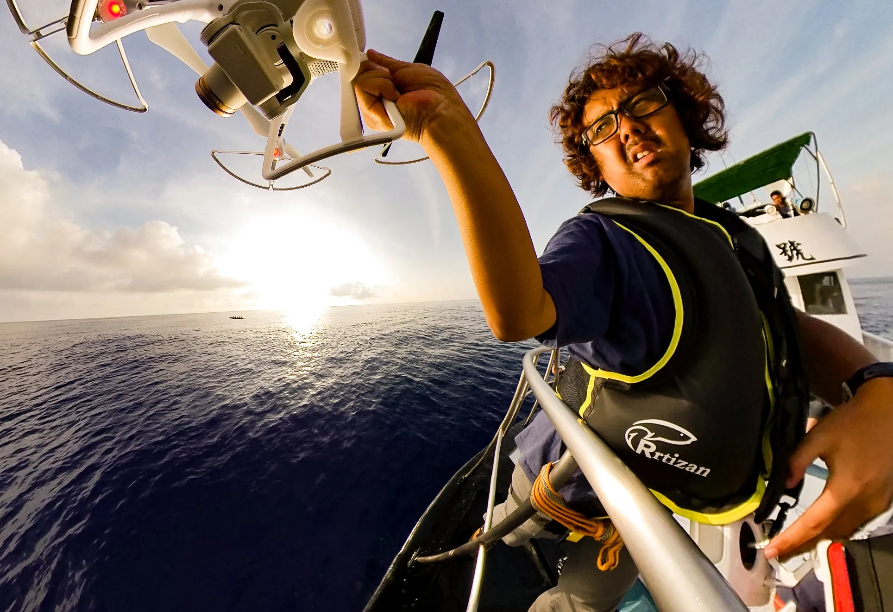
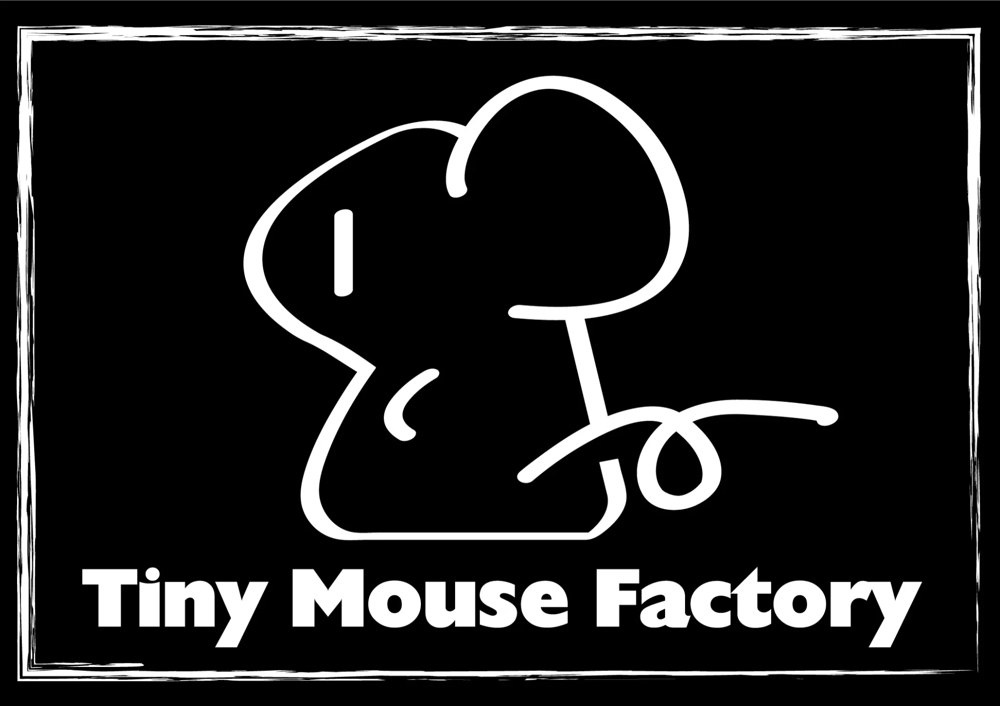

About / Biography
ABOUT
Tiny Mouse Factoryと、にしやまゆうき。
映画・映像・音楽を横断して制作する、小さな制作拠点。




Tiny Mouse Factory
Yuki Nishiyama
にしやまゆうき
FILM DIRECTOR / FILMMAKER / COMPOSER / DRONE OPERATOR
Tiny Mouse Factoryは、にしやまゆうきによる映画・映像・音楽制作の活動拠点。
規模は小さくても、いや小さいからこそ作れるものがある——という思いからこの名を付けた。
1981年、兵庫県赤穂郡生まれ。
21歳で作曲家を志して大学を中退。
作曲・編曲、音楽学校講師などを経て、31歳から写真・映像撮影を業務として開始。
国立公園、博物館、自治体、企業の映像制作・撮影・ドローン・VR／360°映像・編集を手がける一方、BGM制作や作編曲も手掛ける。
2019年、国立科学博物館「3万年前の航海 徹底再現プロジェクト」に映画・VR・テレビ番組の撮影クルーとして参加。
そこで縄文大工・雨宮国広と出会い、2025年に初監督作となるドキュメンタリー映画『みんなのふね』を発表。
続く『揺らぎの聲』では、備前長船の刀鍛冶・川島一城と奉納刀作りの一年を記録している。
FM世田谷「マイカの楽しい仲間たち」に準レギュラー出演。
DIRECTION
CINEMATOGRAPHY
DRONE
EDITING
VR / 360°
MUSIC / COMPOSITION
2008–作編曲家として活動。作曲、編曲、音楽制作、講師等を担当。
2012–写真・映像撮影を業務として開始。
2017–国立公園、博物館、自治体、企業等の映像制作・ドローン撮影を多数担当。
2019国立科学博物館「3万年前の航海 徹底再現プロジェクト」に撮影クルーとして参加。
2025初監督作『みんなのふね』公開。国内外の映画祭で受賞・公式選出。
2027ドキュメンタリー映画『揺らぎの聲』完成予定。監督・編集・音楽を担当。
Awards / Film Festivals
映画『みんなのふね』
世界各地の映画祭にて受賞・公式選出

ボンダンス国際映画祭（日本）BON DANCE International Film Festival
Award Winner - Documentary
Los Angeles Film and Documentary Awards（アメリカ）
Winner - Best Indigenous Voices Documentary
インド国際独立映画祭・GIFFI（インド）
1位 - 国際長編ドキュメンタリー部門-ASIA
Alpine International Film Festival（スイス）
監督賞・撮影賞・編集賞
アジア独立映画祭・AIFF（インド）
優秀賞 - 国際ドキュメンタリー部門
The Impact DOCS Awards（アメリカ）
AWARD OF RECOGNITION
国境なき国際映画祭（アメリカ）Documentaries Without Borders International Film Festival
EXCEPTIONAL MERIT（卓越した功績） - ドキュメンタリー部門
ストックホルムシティ映画祭（スウェーデン）Stockholm City Film Festival
ファイナリスト - 長編ドキュメンタリー部門
スウェーデン映画賞（スウェーデン）Sweden Film Awards
3位 - セミファイナリスト
11th CANADA INDEPENDENT FILM FESTIVAL（カナダ）
公式選出
Ciudad del Este Independent Film Festival（パラグアイ）
公式選出
Dubai City Film Festival（アラブ首長国連邦）
公式選出 - 長編ドキュメンタリー部門
Tokyo Lift-off Film Festival（日本）
公式選出 - 長編部門
Kaminari Japan Film Festival（日本）
公式選出
Podcast
にしやま・メロンの創作休憩室
雑談から生まれる創作の話